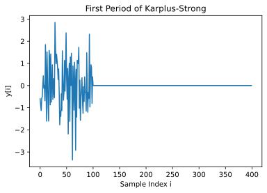
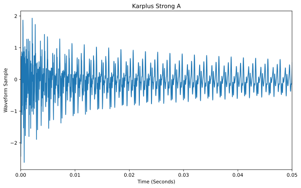
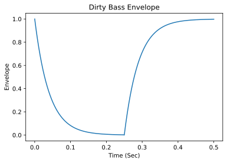

Assignment 2: Digital Instruments (46 Points)
Chris Tralie
Due Sunday 2/21/2021
Click here to listen to musical statements!
- Overview/Logistics
- Background: Karplus Strong
- Background: FM Synthesis
- Programming Tasks
Overview / Logistics
This assignment will serve as the finale of our unit on time domain audio processing. Students will create methods to synthesize digital waveforms for a slew of different instrument sounds, and they will piece them together to make musical tunes. We will make the code extremely functional so that it's easy to plug in different modules together; in other words, we will have many parameters as functions which themselves generate notes and parts of notes.
Click here to download the starter code for this assignment, which also includes some tunes in .txt files that you can use to test your code. You will be editing the file instruments.py and running methods from this file in jupyter so you can listen to audio.
Learning Objectives
- Learn how to make a variety of sounds with FM synthesis
- Practice numpy arrays, methods, and for loops in the service of musical applications
- Learn the mathematical and programmatic aspects of timing, envelopes
- Learn how to use methods as parameters in python to write concise, reusable code
What To Submit
When you are finished, please submit your python file instruments.py to canvas, as well as an audio file for your musical statement and all of the txt files for the instrument tracks that make it up. Please also submit the code or notebook you used to make the musical statement. Finally, please submit answers to the following questions on Canvas
- A title for your musical statement
- If you want to submit your musical statement to the music contest, and if so, what name or pseudonym you would like to use in the musical gallery on our class web site
- Approximately how many hours it took you to finish this assignment (I will not judge you for this at all...I am simply using it to gauge if the assignments are too easy or hard)
- Your overall impression of the assignment. Did you love it, hate it, or were you neutral? One word answers are fine, but if you have any suggestions for the future let me know.
- Any other concerns that you have. For instance, if you have a bug that you were unable to solve but you made progress, write that here. The more you articulate the problem the more partial credit you will receive (fine to leave this blank)
Background: Karplus Strong
We've now seen several ways of creating plucked strings at this point, but there is one more I want to show you that leads to an interesting "rubber band" timbre. It is an instance of something more generally referred to as a "digital waveguide," where we actually think about how energy bounces back and forth along the string and interferes with itself.
In the Karplus-Strong algorithm, we first "tune" the string by determining the period T of repetition of the base frequency of the string. Recall that the period is the reciprocal of frequency f
\[ T = \frac{1 \text{ second}} {f \text{ cycle}} \]
But we actually want to know the number of samples per period. So we need to do a conversation by multiplying by a fancy 1. If sr is the sample rate in cycles per second, then we can do the following:\[ T = \frac{1 \text{ second}} {f \text{ cycle}} \frac{sr \text{ samples}}{1 \text{ seconds}} = \frac{sr \text{ samples}}{ f \text{ second}} \]
Once we've established the period, we then do the following
-
Initialize the first
Tsamples to be random noise. For example, if the frequency is 441hz at a sample rate of 44100hz, then the period is 100 samples, and so we'd fill in the first 100 samples with random noise, as shown below -
Create every sample at index
Tand beyond one by one in order by setting them to be the average of two adjacent samplesTindices back, scaled down by a certain amount; that is\[ y[i] = \text{decay}*\frac{y[i-T]+y[i-T+1]}{2} \]
decay is a number between 0 and 1 that represents a loss of energy over time as the energy dissipates due to friction.
The image below shows a period tuned to a 440hz A with a decay rate of 0.99 (audio below). As you can see, the signal starts off noisy but eventually settles on something periodic.

Below is an example with a decay rate of 0.95. As you can hear, the audio dies out much faster
Background: FM Synthesis
As we saw in module 6, the equation for an FM frequency waveform can be written as
\[ y(t) = A \cos( 2 \pi f_c t + I \sin(2 \pi f_m t)) \]
where- fc: The center frequency or "carrier frequency"
-
fm: The modulation frequency, or how quickly we're going back and forth around the center, which also determines the spacing between harmonics of
f_c - I: Modulation index: the ratio of the modulation deviation to fm, which can also be thought of as the amplitude of the inner sine wave, and which provide some rough control over how many harmonics there are.
- A: The overall amplitude of the waveform
But we can actually make A and I functions of time, so that the time-varying inner and outer amplitude waveform can be written as
\[ y(t) = A(t) \cos( 2 \pi f_c t + I(t) \sin(2 \pi f_m t)) \]
As Chowning shows in his paper, choosing the right functions for A(t) and I(t) is crucial for creating different instrument sounds.
In the second part of this assignment, you will design several such functions, referred to as "envelopes" in this context. You will then pair them with different modulation indices and different fm/fc ratios to make a wide variety of instrument sounds.
Programming Tasks
Your task in this assignment will be to fill in methods to synthesize a variety of musical instrument sounds, and to piece them all together into a tune. Some example tunes have been provided for you as .txt files, and they are in the same format as they were in the last assignment. Each line in the text file contains a note number, followed by a space, followed by the duration of the note in sixteenth note intervals (e.g. a quarter note concert A would be 0 4).
Part 1: Karplus-Strong (7 Points)
Implement the Karplus-Strong algorithm by filling in the karplus_strong_note method in instruments.py. You can use the np.random.rand(m) method to generate m samples of random noise at the beginning. If this works properly, then you should get the following result when you run this in jupyter
Part 2: Tune Making (8 Points)
Now it's time to make a general purpose tune generator by filling in the method make_tune in instruments.py. This method takes another method, note_fn, as a parameter. This parameter method takes three parameters: sr, note, duration, and it returns a numpy array of samples at the specified note for the specified duration (in seconds) at the specified sample rate sr. You can call this parameter method just like any other method. For example, the call
Will generate 0.1 seconds of a concert A at 44100hz. You should loop through all of the notes in the specified tune in make_tune. The easiest way to do this is to make one note at a time using calls to note_fn, and concatenate the generated samples onto the end of an array that is growing for each new note, and which will eventually hold the entire tune. You can use the np.concatenate method to help put new notes on the end of a growing array, rather than pre-allocating an array and putting in slices. For example, for two numpy arrays y and x, the code
will put x onto the end of y.
Other than that, there's one very important change in the format of the note numbers from the last assignment. If the note number is a NaN (not a number), then this means a "rest," or a silence (all 0s) for the requested duration. To check to see if a variable called note is nan, you can write
If this all works, you can pass along karplus_strong_note as the note_fn parameter to make audio as follows
And you should get the following audio (as part of a riff from Missy Elliot's "Gossip Folks")
Note the use of the anonymous function lambda, which you can use to fix the decay amount, and even to change the note parameter that gets passed along to karplus_strong_note from the tune method. For example, the following code
Would yield this sound
Part 3: FM Synthesis Framework (5 Points)
In the following tasks, you will make a variety of different instrument types using fm synthesis, following suggestions from John Chowning's seminal paper. Each case boils down to creating the appropriate envelopes for A(t) and I(t), selecting the max value for I(t), and to tuning the ratio between fm and fc.
Your first task will be to write some general purpose code for FM synthesis that you can use over and over again for different instruments by filling in the fm_synth_note method. Just like any note generation method in this assignment, the first three parameters are sr, note, and duration. But then there are 4 more optional parameters for FM specifically, which can be tweaked to get vastly different instrument sounds:
-
ratio: The ratio of fm to fc. Recall that fc is determined from the note, so this is all the information you need to figure out fm as well. -
I: An amount by which to scale the envelope for the bandwidth index. -
envelope: A function that takes two parameters,N(number of samples) andsr(sample rate), and which is used to generate an envelope for the bandwidth index. By default, this method returns all ones for a constant bandwidth index. The full time-varying envelope is this numpy array times theIparameter above. -
amplitude: A function that takes two parameters,N(number of samples) andsr(sample rate), and which is used to generate an envelope for the amplitude A(t) in front of the waveform. By default, this method returns all ones for a constant unit amplitude.
Once you put all of these parameters together to generate and return a waveform, you can use fm_synth_note as a note generation method in other methods. For example, the fm_plucked_string_note method that has been provided to you wraps around fm_synth_note to generate a plucked string. It uses the exp_env function as the generator function for both the modulation index envelope and the amplitude. It also uses a ratio of 1 and an I of 8. The code below puts fm_plucked_string_note into action with a clip from Kenny Loggins's "Danger Zone", and it should work once you've finished implementing fm_synth_note
Part 4: FM Synthesis Instrument Zoo (23 Points)
In this section, you will use the above framework to make a variety of different instrument sounds. Each instrument requires the creation or utilization of an envelope function and a method to put it all together.
Bell Notes (3 Points)
Fill in the method fm_bell_note to make a note that sounds like a struck bell. This method is very similar to the fm_plucked_string_note method, but the parameters make all the difference. In particular, you should use an exponential envelope with a lambda of 0.8 for both the amplitude and modulation envelope, and you should use a modulation frequency ratio of 1.4 to create inharmonic sounds characteristic of a bell. Finally, you should use a modulation index I of 2. Assuming this is all working properly, here's some code you can run
Brass Notes (5 Points)
To make a brass note, first fill in the method brass_env(N, sr) to generate an envelope that will be used for both the amplitude and modulation index. The brass envelope is split into four parts
- Attack: The first 0.1 seconds of a ramp up from nothing
- Decay: The next 0.1 seconds with a small decay
- Sustain: All of the envelope up to the release, which is a very gradual decay
- Release: The last 0.1 seconds of audio
Remember, linspace is your friend!
Note that if the requested amount of samples aren't more than 0.3 seconds long, then the sustain should be cut out completely, and the release, decay, and attack should be shortened in that order.
Once you're finished fill in the method fm_brass_note to create a brass note using fm synthesis with brass_env used for both the modulation envelope and the amplitude envelope, and for a ratio of 1 and an I of 10. Assuming this is all working properly, here are a few examples of tunes you can create with this sound.
From Usher's "Yeah" and Mussorgsky's "Pictures At An Exhibition", respectively.
Drum-Like Sound (5 Points)
To make a "drum-like" sound (according to Chowning's paper), an envelope is required that look as below (with code to generate it). Fill in the drum_like_env code to do this

As a hint, consider sampling a horizontally shifted version of the function
\[ t^2 e^{-\lambda t} \]
where lambda is some constant, and the larger the constant, the quicker the decay. Once you're finished generating the envelope, fill in the method fm_drum_sound to create a drum sound using fm synthesis with drum_like_env used for both the modulation envelope and the amplitude envelope, and for a ratio of 1.4 and an I of 2. You should also ignore the note parameter that's passed on and instead pass along the fixed_note parameter to fm_synth_note so that the drum stays at a constant pitch.
Wood Drum Sound (5 Points)
To make a "wood drum" sound (according to Chowning's paper), an envelope is required that look as below (with code to generate it). Fill in the wood_drum_env code to do this

Once you're finished generating the envelope, fill in the method fm_wood_drum_sound to create a wood drum sound using fm synthesis with wood_drum_env used for both the modulation envelope and the amplitude envelope, and for a ratio of 1.4 and an I of 10. You should also ignore the note parameter that's passed on and instead pass along the fixed_note parameter to fm_synth_note so that the drum stays at a constant pitch.
Dirty Bass Sound (5 Points)
There's nothing to say we need to stick to sounds which are physically realistic. In fact, a lot of the innovation that's happened with FM synthesis has come out of people coming up with their own strange envelopes and modulation schemes that have nothing to do with any physical motivation, but which sound really cool as electronic music. I stole the idea below from attackmagazine.com. See if you can make an envelope that looks like the one below: 
Once you're finished generating the envelope, fill in the method fm_dirty_bass_note to create a dirty bass note using fm synthesis with dirty_bass_env used for both the modulation envelope and the amplitude envelope, and for a ratio of 1 and an I of 18.
Part 5: Musical Statement (3 Points)
You just made an amazing digital synthesizer, now put it to use! Make your own tune and synthesize it with one of your methods. This can be whatever you want, but it should have at least two instrument "tracks." What this means is you should actually have more than one file and generate a different waveform for each with a different instrument, and then add them together to "mix" them. For example, you might have some drums in the background of a brass riff, or you might have a bells intro to a plucked string riff.
To download and submit your audio, right click on the audio widget in Jupyter and click "Save Audio As"
If you choose to enter your musical statement into the class-wide contest, then you can earn up to two points of extra credit as the winner.
For the bored...
Try to make another instrument with FM synthesis! You can look at some of the details in Chowning's paper or google online for youtube videos and other tutorials on cool sounds that people have come up with.